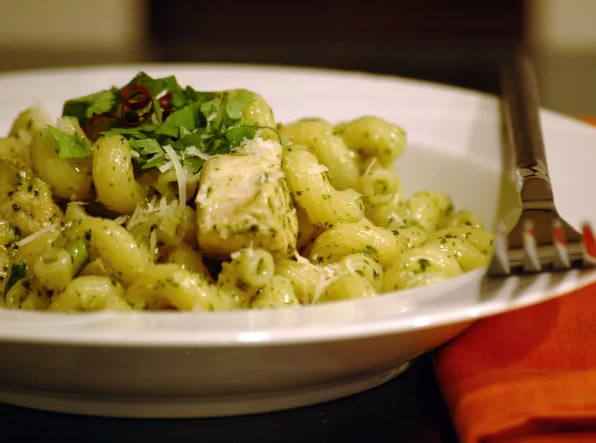

A spicy chicken and pesto pasta dish that's easy to adjust to any heat level. I created it after eating a similar dish at a Santa Monica restaurant, and it's one of my favorites. Serve with additional grated Parmesan, if desired. As an option, it's delicious with creamy goat cheese stirred in at the end.
Ingredients
Directions
Step 1
Bring a large pot of lightly salted water to a boil. Place farfalle pasta in the pot, cook for 8 to 10 minutes, until al dente, and drain.
Step 2
Heat the olive oil in a large skillet over medium heat. Mix in the chile paste and chicken. Cook and stir chicken 10 minutes, or until evenly browned and juices run clear.
Step 3
Toss the cooked farfalle, pesto, Parmesan cheese, and cilantro into the skillet, and continue cooking just until heated through.